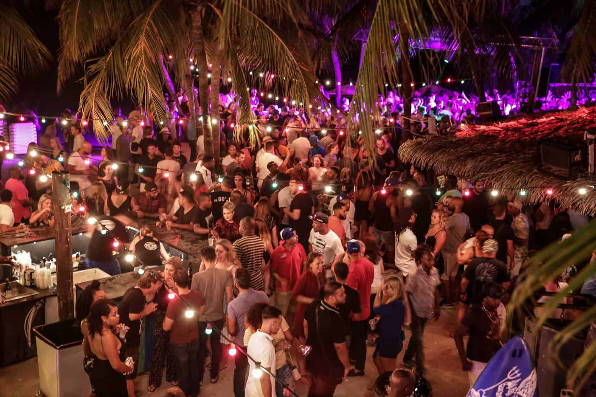

Bem-vindo à Atenas
Atenas, capital da Grécia, é uma cidade que vive e respira arte. Com uma história rica que remonta a mais de 3.000 anos.
Berço da democracia, da filosofia ocidental e de algumas das maiores maravilhas arquitetônicas do mundo, Atenas é um destino que mistura o antigo e o moderno de forma única.

Motivos para visitar atenas
- A sua riqueza Historica e Arqueologica torna esta cidade um lar de muitos monumentos e sítios arqueológicos importantes.
- alguns dos museus mais importantes do mundo, oferecendo uma visão profunda da história e cultura gregas como o Museu da Acrópole.
- Atenas tem uma vida noturna animada, com bares, clubes e tavernas tradicionais em bairros como o plaka,Psiri.
- Atenas é uma porta de entrada para as ilhas gregas. Muitas pessoas passam pela cidade antes de explorar as famosas ilhas de Santorini,Mykonos,Hydra.
- O clima mediterrâneo de Atenas é outro atrativo, com verões quentes e secos, perfeitos para turismo, e invernos suaves, tornando a cidade agradável para visitar durante todo o ano.
DIOGO,Universidade Lusofona, 2024